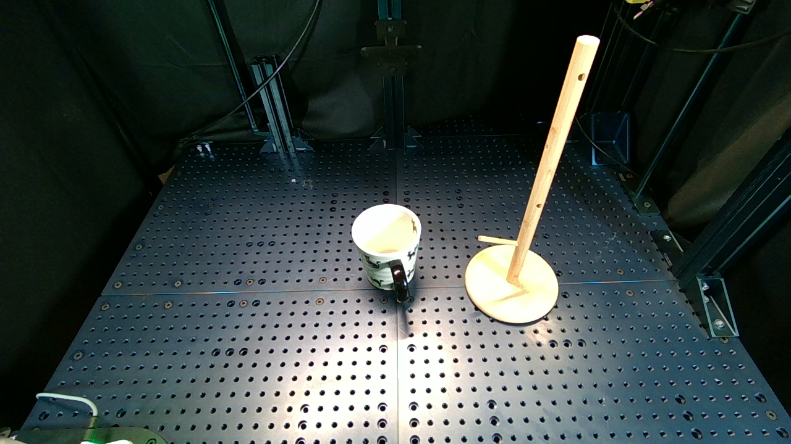
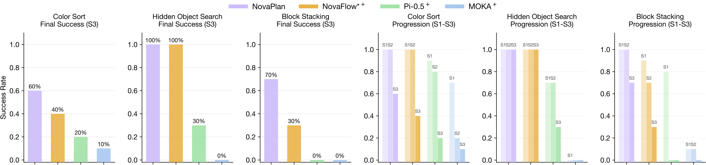

Solving long-horizon tasks requires robots to integrate high-level semantic reasoning with low-level physical interaction. While vision-language models (VLMs) and video generation models can decompose tasks and imagine outcomes, they often lack the physical grounding necessary for real-world execution. We introduce NovaPlan, a hierarchical framework that unifies closed-loop VLM and video planning with geometrically grounded robot execution for zero-shot long-horizon manipulation. At the high level, a VLM planner decomposes tasks into sub-goals and monitors robot execution in a closed loop, enabling the system to recover from single-step failures through autonomous re-planning. To calculate low-level robot actions, we extract and utilize both task-relevant object keypoints and human hand poses as kinematic priors from the generated videos, and employ a switching mechanism to choose the better one as reference for robot action, maintaining stable execution even under heavy occlusion or depth inaccuracy. We demonstrate the effectiveness of NovaPlan on three long-horizon tasks and the Functional Manipulation Benchmark (FMB). Our results show that NovaPlan can perform complex assembly tasks and exhibit dexterous error recovery behaviors without any prior demonstrations or training.
3D Point Cloud & Actionable Flow from Generated Video
Note: The visualized end-effector is offset from the physical one due to longer gripper fingers
used in real-world experiments.
Initial Observation
Generated Video
Execution Video (1x speed)
High-level Planning System: A high-level planner takes in the task instruction and current
observation,
and proposes multiple task-solving videos after VLM reasoning of the task progress. Videos are selected based
on flow and semantic consistency. The low-level planner calculates the robot action from the extracted hand or
object flow. Updated observations are sent to a VLM critic to determine whether the robot should proceed to
the next step or recover from failure.
Low-level Execution System: Given the generated video plan (RGB+Depth), we switch between
grounding the target object, tracking 3D keypoints, and recovering object flow, or estimating the
hand pose with HaMeR, calibrating 3D scale, and computing the hand flow.
The resulting object/hand flows are converted into robot actions for on-robot execution, with a video language
planner enabling closed-loop re-planning and recovery.

Example Experiment: Describe the experiment setup, the goal, and the observed results.

Experiment Results: (left) we show the final success rate of different methods on three long-horizon tasks. (right) we show the success rate of different methods on three long-horizon tasks at each step. For fair comparison, we assume compared methods (with $^+$ mark) are provided with an oracle high-level plan.
Failure Modes: Analyze where your method currently fails. This provides valuable insights for future improvements.